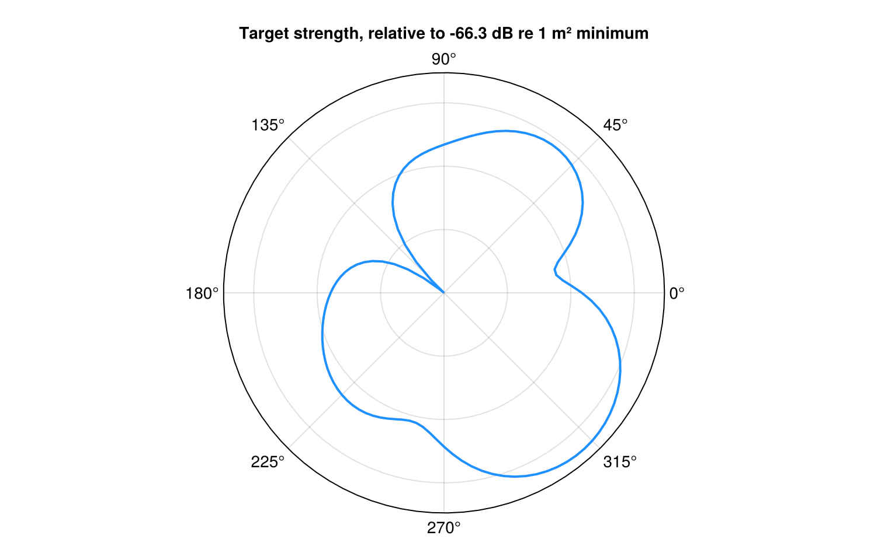
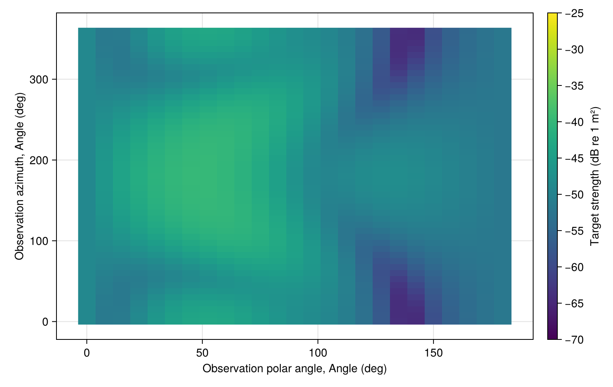
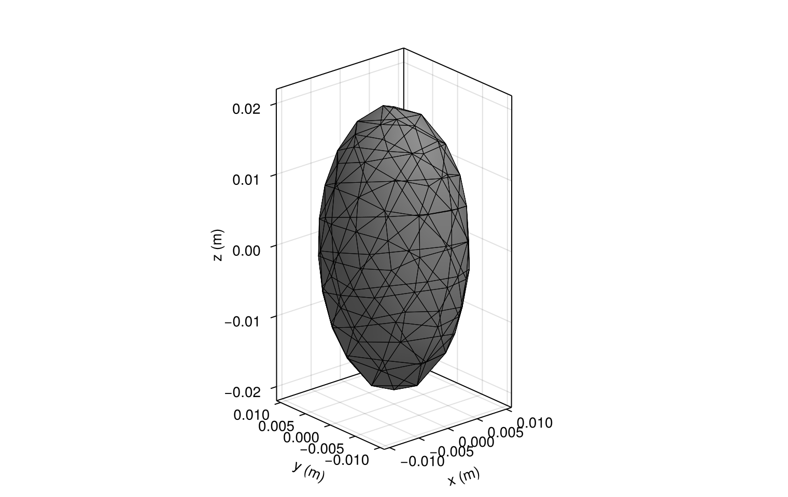
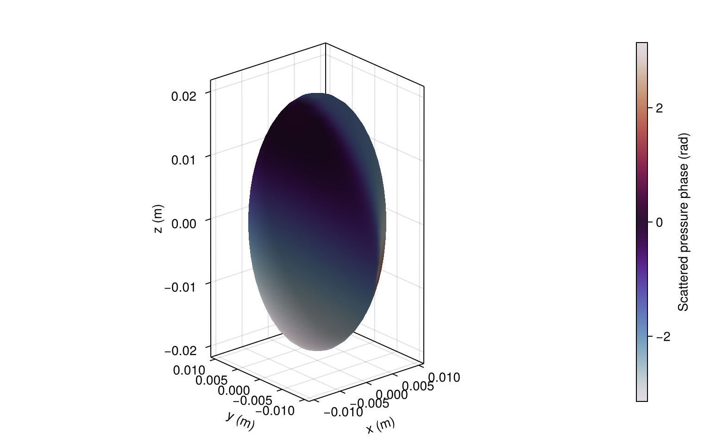

Gallery examples
These examples generate the scattering patterns and 3D views in the gallery. For the 1D figures, see the frequency sweep and incidence-angle sweep.
Define the spheroid
Use a rigid prolate spheroid with 2 cm axial and 1 cm equatorial semi-axes in water. The frequency is 38 kHz, and incidence is 45° from the symmetry axis at zero azimuth. The BEM calculation uses 24 meridian panels and Fourier modes 0 through 4. These are small visualization settings. Increase both to check numerical convergence.
using AcousticScattering
using CairoMakie: Colorbar, plot, save
body = Spheroid(0.02, 0.01)
sound_speed = 1477.4
frequency = 38000.0
wavenumber = 2pi * frequency / sound_speed
solution = bem(body, Rigid(), wavenumber; incidence_angle = pi / 4, n = 24, m_max = 4)
@assert isfinite(target_strength(solution))Polar scattering pattern
Take a cut at zero observation azimuth. The angle is measured from the body axis. The polar radius is target strength minus the cut's minimum, not absolute target strength.
polar_figure = plot(solution; kind = :bistatic_polar,
angles = range(0, 2pi; length = 121), show_incidence = false,
figure = (size = (760, 480),))
save("bistatic_polar.png", polar_figure)
Angular scattering map
View the same solution over observation polar angle and azimuth, both measured in body coordinates. Color limits are fixed at −70 to −25 dB re 1 m².
strength_limits = (-70.0, -25.0)
map_figure = plot(solution; kind = :bistatic_map,
thetas = range(0, pi; length = 25), phis = range(0, 2pi; length = 49),
colorrange = strength_limits, colormap = :viridis,
figure = (size = (760, 480),))
Colorbar(map_figure.figure[1, 2]; limits = strength_limits, colormap = :viridis,
label = "Target strength (dB re 1 m²)")
save("bistatic_map.png", map_figure)
Surface mesh
Generate a triangular surface mesh with a target edge length of 6 mm. This is separate from the meridian discretization used by the axisymmetric BEM solution above.
surface_mesh = mesh(body; method = :full, resolution = 0.006)
mesh_figure = plot(surface_mesh; show_edges = true,
figure = (size = (760, 480),),
axis = (xlabel = "x (m)", ylabel = "y (m)", zlabel = "z (m)"))
save("spheroid_mesh.png", mesh_figure)
Surface pressure phase
Color the BEM surface by scattered-pressure phase. The cyclic palette joins −π and π, which represent the same phase. This is a surface field, not a volume-field reconstruction.
phase_limits = (-pi, pi)
field_figure = plot(solution; kind = :surface_field, field = :pressure_phase,
colorrange = phase_limits, colormap = :twilight,
figure = (size = (760, 480),),
axis = (xlabel = "x (m)", ylabel = "y (m)", zlabel = "z (m)"))
Colorbar(field_figure.figure[1, 2]; limits = phase_limits, colormap = :twilight,
label = "Scattered pressure phase (rad)")
save("surface_phase.png", field_figure)